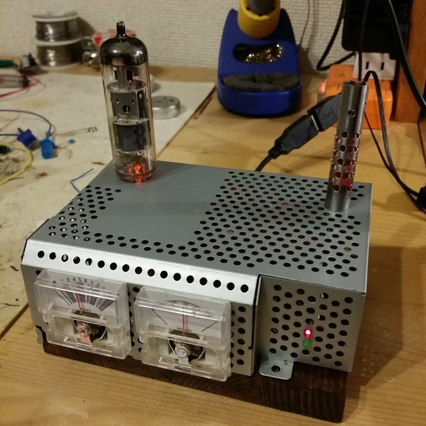

Why why why oh why ?
No ultimate good reasons but a list of "because":- Because I can find some use to it (I'm an engineer so no purpose, no attraction)
- Because those voltmeters are so cheap (100 JPY)
- Because it looks more complex than what it is (that's for picking up girls ... or geeks)
- Because otherwise the little spare time I have in my life is spent between cigarette and hangover
So, it will be like that :
- 2 voltmeters for hours and minutes
- Hours will be 12h based %20 backlight color for indicating morning/evening (RGB color, orange vs. night blue ?)
- Need ot pick a RTC, very unhappy with creepy DS1307, I'd like something that actually keeps time... DS3234
- No arduino inside but Arduino compatible (ATmega 88)
- And for the design:
- Metal enclosure from a recycled EMF shield
- "Old chestnut style" pine wood (a piece of pine painted with special varnish)
- Some real vacuum tubes with the light under for the style (totally useless)
- As smoke pipe to release the pressure of so much calculation (you'll see)
- Dings and dents...
Technical
Driving the voltmeter
Ooooh Japan cheap 100JPY ("hyaku-en") shop, I love you. Found some cheap battery tester with a voltmeter. You have to brutally open the voltmeter (at 1 USD it's not made to be serviced) and extract the interresting part. Then you must drive the voltmeter,- Driving non linear voltmeter http://www.waitingforfriday.com/index.php/USB_Performance_Monitor
- http://www.allaboutcircuits.com/vol_1/chpt_8/8.html
- RC circuit http://www.electronics-tutorials.ws/rc/rc_1.html
- http://en.wikipedia.org/wiki/Voltmeter
In fact the voltmeter are easy to drive with a 1kOhm in serial and PWM. No algorithm inside, I made just a simple measurements and stored in the EEPROM the calibrated values for each hours or 10's minutes. I'd do a simple ratio for minutes. My only concern is that the voltmeter I got now are using a spring to push the arrow back to zero (and therefore subject to stress and losing it strength), whereas previous I bought a few months ago where using a magnet. Let's see, but I forecast that periodic re-calibration will be necessary.
Draw the voltmeter
With Inkscape, a shot of the original one, precise mesuring and a little time, you can have good results.
Source SVG file : voltmeter-scale-time12.svg
{kind=link}
Lights
The clock will have a few fake tube (real dead vacuum tubes with a led at the bottom), but it will be fixed. There will be also some changing lights:- One flame like light, pulsating, in the body of my former soldering iron
- Two alternating leds changing status every second
This will be powered by a ATtiny10, an extra small micro controller of barely 3mm x 3mm. This was just a pretext to practice with this little IC, and seeing the limited number of pins, blinking led is what I'll use it for (though some people put USB stack on it ...!).
Code is here at Google code, in the project ArdReveil4Effects. Points of interrest:
- PWM and Random algorithm for the flame burning effect
- Watchdog interrupt for the blinking-every-second
%20-\/-%20
Flame PB0 |o | PB3
GND | | VCC
Led pin PB1 |____| PB2 Led pin
Code
All the code for the main MCU (Atmegaxx8) is in the Google source control (you can pick the tag ARDREVEIL4_VOLTMETER_20141207)Things to know:
- Works with any atmega xx8 (used a atmega88, already an overkill)
- Change the settings to use your RTC (my case was a DS3234)
- Change the display to VoltmeterDisplay
Points of interrest in the code:
- For driving the voltmeter it does fast PWM to remove the high pitched sound,
- Calibrated values are stored in the EEPROM so read/write there,
- Talks to the DS3234 using SPI,
- Basically it's the code of WordClock just migrated to Atmel Studio 6, just a bit better
Pictures
The enclosure in preparation: a piece of wood at the bottom, the top is the aluminium shielding of a big power circuit of a thing I attempted (but failed) to repair, you see also a tube that will be plugged in the stuff, as well as one of the voltmeter. The thin steel pipe is the body of my former iron, and I always knew I could reuse this baby for design ... just wait, you'll see.
First holes for the voltmeters and the chimney (you'll see)
Just a quick preview of what it will look like. Still need to make the hole for the tube.

Attiny10 part done and wired inside the aluminium shielding
Nearly finished, need a couple more leds and plug in the voltmeters for real

Finished product. Managed to take the picture with the angle of the protective plastic cover just right on the figures (sigh... oh well).
The insides of the beast: on the left a atmega328 on its WordClock v1.0 board
Documentations
I hate those guys
- http://hackedgadgets.com/2010/06/23/multimeter-clock-styled-after-the-simpson-260-multimeter/
- http://hackaday.com/2010/01/30/hybrid-analogbinary-clock-the-mk2/
Other interesting sources
- A performance meter with Vu-meter and algorithm for good PWM control http://www.waitingforfriday.com/index.php/USB_Performance_Monitor